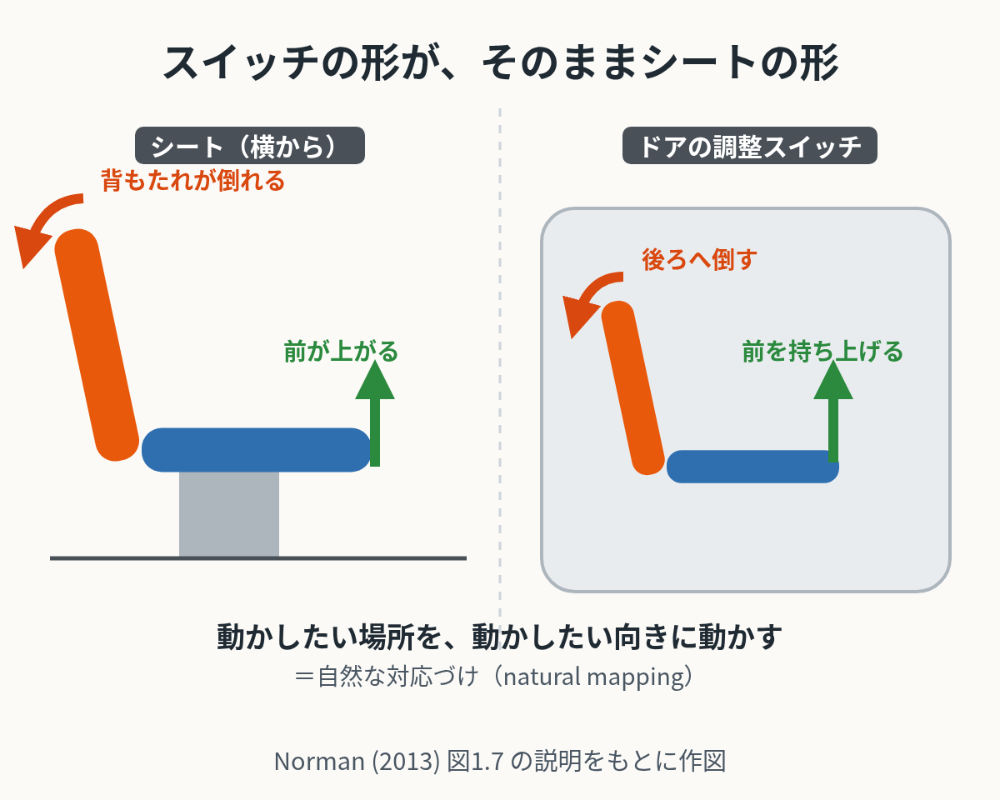
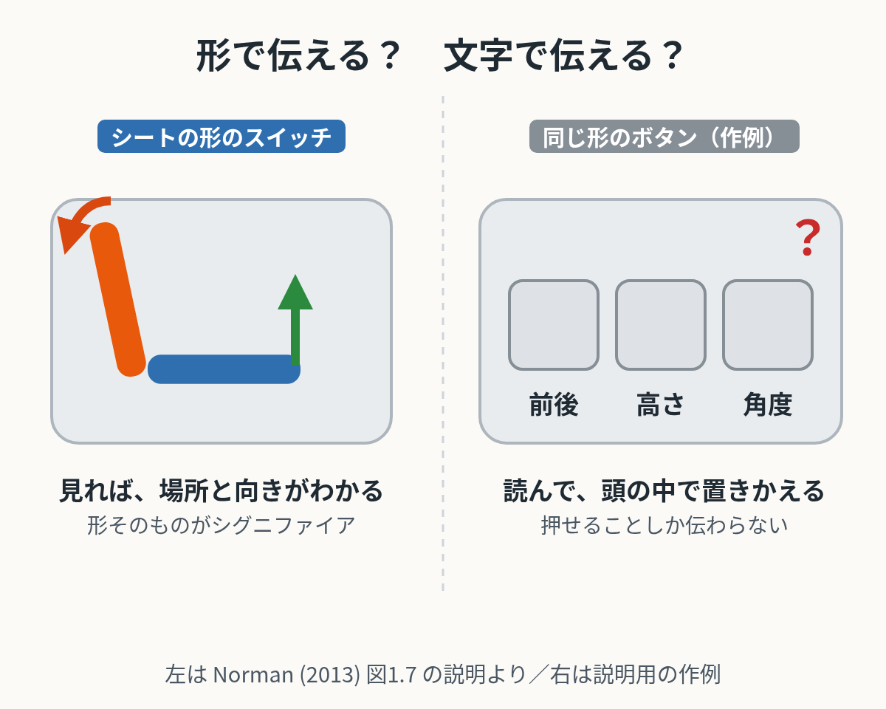

第9回 車・乗り物
シートの形をしたシート調整スイッチ（形がそのまま対応を教える）


何がどう行為を誘っているか
メルセデス・ベンツの車では、電動シートを動かすスイッチがドアの内側にあり、その形がシートを横から見た姿になっています。座面の形をした部品と、背もたれの形をした部品が組み合わさっています。
座面の前を上げたいときは、スイッチの前側を持ち上げます。背もたれを倒したいときは、背もたれの形の部分を後ろへ倒します。動かしたい場所を、動かしたい向きに動かすだけです。説明書を読まなくても、形を見れば「ここをこう動かせばいい」とわかります。
ノーマンは『誰のためのデザイン？』で、このスイッチを「自然な対応づけ（natural mapping）」のすぐれた例として写真で紹介しています。操作部がシートの形そのものなので、どこを動かすとどこが動くかの対応がまっすぐだ、という説明です。形そのものが、触る場所と動かす向きを知らせるシグニファイアになっています。
惜しい例・悪い例との対比
比べるために、同じ機能を、同じ大きさの四角いボタンを横一列に並べ、「前後」「高さ」「角度」と文字で書き分けた操作部を考えてみます（説明用の作例です）。どのボタンも見た目は同じで、押せることは伝わりますが、どれを押せばシートのどこがどちらへ動くのかは、文字を読んで頭の中で置きかえるまでわかりません。座ったまま手さぐりで操作する場面では、とくに迷いやすくなります。
ノーマンは同じ節で、ハンドルを右に回すと車が右に曲がるように、空間の似かよりを使った対応づけはすぐに理解できると述べ、操作部は操作する対象の近くに置くべきだとも書いています。メルセデス・ベンツ日本も取材に対し、操作パネルを見やすく触りやすいドアに置き、シートの形にして直感的に動かせるよう意識していると答えています。
使いどころのひとこと
操作部を、動かす対象と同じ形・同じ並びにすると、ラベルを読む手間が消えます。スライドで図の各部分を説明するときは、凡例を別に置くより、図の該当する場所に直接番号や説明を重ねると伝わりやすくなります。研究サイトでも、表示の切り替えボタンを並び方そのもののアイコンにするなど、「対象の形をした操作部」を一つ探してみると、説明文を一行減らせます。